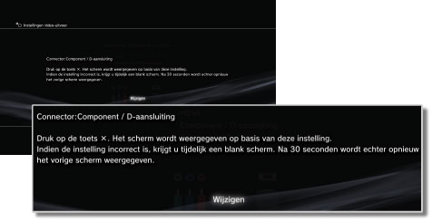
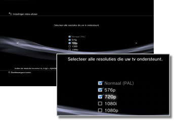
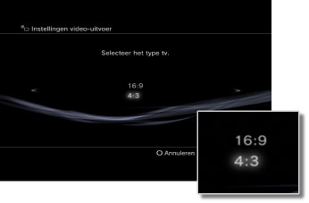
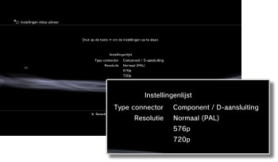

Instellingen video-uitvoer
De instellingen van de video-uitvoer van het systeem wijzigen. Selecteer de beste uitvoerinstellingen voor de gebruikte tv.
1. |
Controleer de resolutie die door uw tv wordt ondersteund.
De resolutie (videomodus) varieert afhankelijk van het tv-type. Voor meer informatie verwijzen wij u naar de instructies die bij de tv worden meegeleverd.
|
2. |
Selecteer  (Instellingen) > (Instellingen) >  (Beeldscherminstellingen). (Beeldscherminstellingen).
|
3. |
Selecteer [Instellingen video-uitvoer].
|
4. |
Selecteer het type aansluiting van uw tv.
De resolutie (videomodus) varieert afhankelijk van het type aansluiting dat wordt gebruikt.

| Kabeltype |
Invoeraansluiting op de tv |
Ondersteunde videomodi *1 |
HDMI-kabel (los verkrijgbaar)
 |
HDMI
 |
NTSC: 1080p / 1080i / 720p / 480p
PAL: 1080p / 1080i / 720p / 576p |
Component-AV-kabel (los verkrijgbaar)

Kabel met D-aansluiting (los verkrijgbaar)
 |
Component

D-aansluiting *2
 |
NTSC: 1080p / 1080i / 720p / 480p / 480i
PAL: 1080p / 1080i / 720p / 576p / 576i |
AV-kabel (bijgeleverd)

S-VIDEO-kabel (los verkrijgbaar)
 |
Composiet

S-video*3
 |
NTSC: 480i
PAL: 576i |
AV MULTI-kabel (los verkrijgbaar) [VMC-AVM250] (een Sony Corporation-product)

AV-kabel (bijgeleverd)
Euro-AV-stekker (bijgeleverd) *4
 |
AV MULTI*5

SCART*6
 |
NTSC: 480p / 480i
PAL: 576p / 576i |
| *1 |
De opties voor de videomodus hangen af van de regio waar het PS3™-systeem werd aangekocht. In Noord-Amerika, Azië en andere NTSC-regio's wordt 480i-videomodus weergegeven als [Normaal (NTSC)]. In Europa en andere PAL-regio's wordt 576i-videomodus weergegeven als [Normaal (PAL)]. Voor meer informatie verwijzen wij u naar de instructies bij het product.
|
| *2 |
De D-aansluiting is een aansluitingstype dat vooral in Japan wordt gebruikt. De resoluties die door D1 tot D5 worden ondersteund zijn de volgende:
D5: 1080p/720p/1080i/480p/480i
D4: 1080i/720p/480p/480i
D3: 1080i/480p/480i
D2: 480p/480i
D1: 480i
|
| *3 |
S-VIDEO is een formaat dat vooral in Japan wordt gebruikt.
|
| *4 |
De Euro-AV-stekker wordt alleen geleverd bij PS3™-systemen die verkocht worden in Europa.
|
| *5 |
AV MULTI is een formaat dat vooral in Japan wordt gebruikt. Als [AV MULTI / SCART] is geselecteerd, wordt het scherm weergegeven dat u toelaat om het type uitvoersignaal te kiezen.
|
| *6 |
SCART is een formaat dat vooral in Europa wordt gebruikt. Als [AV MULTI / SCART] is geselecteerd, wordt het scherm weergegeven dat u toelaat om het type uitvoersignaal te kiezen.
|
|
5. |
Stel het schermformaat van de 3D-tv in.
Stel op het systeem hetzelfde schermformaat in als voor de televisie die u gebruikt.
Als u geen 3D-tv gebruikt of als u [HDMI] niet geselecteerd hebt in stap 4, wordt dit scherm niet weergegeven.
|
6. |
Wijzig de instellingen van de video-uitvoer.
Wijzig de resolutie voor de video-uitvoer. Afhankelijk van het type aansluiting dat in stap 4 wordt geselecteerd, wordt dit scherm mogelijk niet weergegeven.

|
7. |
Stel de resolutie in.
Selecteer alle resoluties die door de gebruikte tv worden ondersteund. Video zal automatisch aan de hoogst mogelijke resolutie van de geselecteerde resoluties worden uitgevoerd voor inhoud die u afspeelt.*
* De videoresolutie wordt geselecteerd in de volgende rangorde: 1080p > 1080i > 720p > 480p/576p > Normaal (NTSC:480i/PAL:576i).
Als [Composiet / S-video] is geselecteerd in stap 4, wordt het scherm om de resolutie te selecteren niet weergegeven.
Als [HDMI] geselecteerd is, kunt u kiezen om de resolutie automatisch aan te passen (het HDMI-apparaat moet ingeschakeld zijn). In dat geval zal het scherm voor de selectie van resoluties niet worden weergegeven.

|
8. |
Stel het type tv in.
Selecteer het type van de gebruikte tv. Stel dit in wanneer enkel SD-resolutie (NTSC: 480p / 480i, PAL: 576p / 576i) moet worden uitgevoerd, zoals wanneer [Composiet / S-video] of [AV MULTI / SCART] is geselecteerd in stap 4.

|
9. |
Controleer uw instellingen.
Bevestig dat het beeld aan de juiste resolutie voor de tv wordt weergegeven. U kunt terugkeren naar een vorig scherm en de instellingen aanpassen door op de  -toets te drukken. -toets te drukken.

|
10. |
Sla uw instellingen op.
De instellingen video-uitvoer worden op het PS3™-systeem opgeslagen. U kunt verdergaan met het instellen van de audio-uitvoer. Raadpleeg (Instellingen) >  (Geluidsinstellingen) > [Audio Output Settings] in deze handleiding voor meer informatie over audio-uitvoer. (Geluidsinstellingen) > [Audio Output Settings] in deze handleiding voor meer informatie over audio-uitvoer.
|
Opmerkingen
- Als de instellingen voor de video-uitvoer niet overeenkomen met de instellingen die voor de gebruikte tv vereist zijn, geeft het scherm mogelijk geen beeld meer weer als de resolutie wordt gewijzigd. Het scherm zou echter na een tijd automatisch moeten teruggaan naar de originele resolutie. Als het scherm gedurende meer dan 30 seconden leeg blijft, schakelt u het systeem uit. Raak vervolgens de activeringstoets op de voorkant van het systeem gedurende minstens vijf seconden aan om het systeem opnieuw in te schakelen. De instellingen video-uitvoer worden automatisch opnieuw ingesteld op de standaardresolutie.
- Als een apparaat dat niet compatibel is met de HDCP（High-bandwidth Digital Content Protection）-standaard op het systeem is aangesloten met behulp van een HDMI-kabel, kan video en/of audio niet via het systeem worden uitgevoerd.
- Inhoud op een Blu-ray Disc die beschermd is door auteursrechten kan enkel aan 1080p worden uitgevoerd via een op een apparaat aangesloten HDMI-kabel die compatibel is met de HDCP-standaard.
- Wanneer het PS3™-systeem (CECH-3000-/4000-reeks) aangesloten is op een tv via een kabel met D-aansluiting, een component-AV-kabel of een multi-AV-kabel (een Sony Corporation-product), wordt de analoge HD-uitvoer beperkt om te kunnen voldoen aan de technologie voor de bescherming van auteursrechten die wordt gebruikt door Blu-ray™ (AACS (Advanced Access Content System)). BD-videosoftware (BD-ROM) en BD's waarop inhoud opgenomen is die beschermd is door auteursrechten (zoals televisieprogramma's) worden uitgevoerd aan 480i.
- Sluit het systeem (CECH-4200-reeks of recenter) aan met behulp van een HDMI-kabel om BD-videosoftware (BD-ROM) en BD's met inhoud die beschermd is door auteursrechten af te spelen.